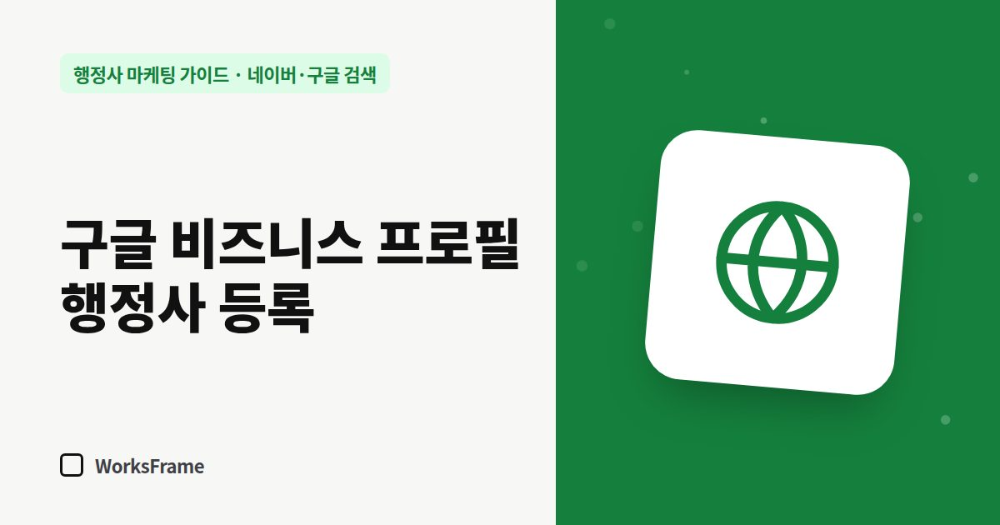

네이버·구글 검색
구글 비즈니스 프로필 등록 — 출입국 행정사라면 특히 챙기세요
한 줄 답
외국인 고객은 구글 지도를 많이 씁니다. 구글 비즈니스 프로필을 무료로 등록·인증하고, 영어 소개와 상담 가능한 언어를 사실대로 적으세요.

한국 고객은 네이버 지도를 주로 보지만, 외국인 고객과 해외에서 온 기업 담당자는 구글 지도와 구글 검색을 먼저 켭니다. 출입국·체류 업무를 한다면 구글 비즈니스 프로필은 선택이 아니라 기본입니다.
구글 비즈니스 프로필로 할 수 있는 것
- 구글 지도와 검색에 사무소 정보(주소, 전화, 영업시간, 웹사이트) 표시
- 사진, 업무 소개, 리뷰와 답글
- 구글이 안내하듯, 프로필 소유권을 가져와야 정보가 어떻게 보일지 직접 관리할 수 있습니다
등록과 인증 흐름
- 구글 계정으로 비즈니스 프로필 만들기 (사무소 운영용 계정)
- 사무소명, 업종, 주소, 전화, 웹사이트 입력
- 인증 — 구글이 안내하는 방법(영상 인증 등)으로 사무소가 실제로 있음을 확인
- 인증 후 영업시간, 사진, 소개 채우기
인증 방법은 구글이 계정과 업종에 따라 정해 안내합니다. 영상 인증이라면 간판, 사무실 내부, 사업자 서류처럼 실제로 영업하는 곳임을 보여 줄 것을 미리 준비하세요.
외국인 고객을 위한 설정
- 소개글에 영어 한 단락 — 어떤 체류 업무를 하는지, 어떤 언어로 상담 가능한지
- 상담 가능 언어를 분명히 — 과장하지 말고 실제로 가능한 언어만
- 웹사이트 칸에는 다국어 안내 페이지 주소를 넣는 것도 방법입니다
네이버 플레이스와 정보 맞추기
구글과 네이버의 사무소명·주소·전화가 다르면 고객이 헷갈립니다. 한국어 표기는 네이버와 같게, 영문 표기는 하나로 정해 모든 곳에 똑같이 쓰세요.
리뷰 관리
외국인 고객은 리뷰를 꼼꼼히 보는 편입니다. 업무가 끝난 고객에게 리뷰 링크를 보내되, 대가를 주고 쓰게 하지는 마세요. 답글은 고객이 쓴 언어로 짧게 달면 좋습니다.
자주 묻는 질문
인증이 안 되면 어떻게 하나요?
구글 비즈니스 프로필 고객센터의 안내에 따라 다른 인증 방법을 요청할 수 있습니다. 간판이나 표지가 없는 공유오피스라면 인증이 까다로울 수 있으니 미리 준비하세요.
영어 리뷰에 한국어로 답해도 되나요?
됩니다. 다만 고객이 쓴 언어로 답하면 다른 외국인 방문자에게도 “이 언어로 상담이 되는구나”라는 신호가 됩니다.